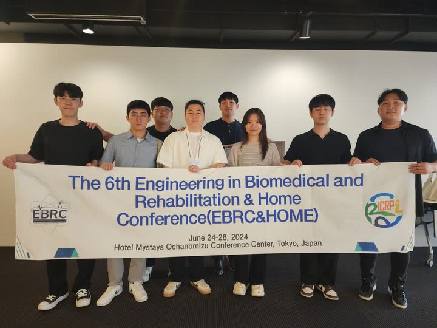
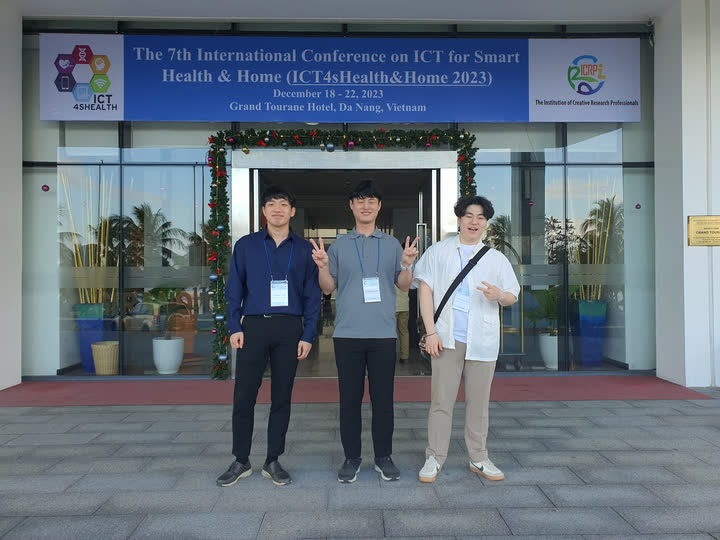

About
My research focuses on robust and high-precision control of robot manipulators under external disturbances and model uncertainties, with particular emphasis on adaptive sliding mode control and its integration with neural network-based estimation. I have proposed novel adaptive laws based on quasi-convex functions and averaged sliding variables that improve disturbance robustness while mitigating chattering, and I have developed neural network-assisted time-delay estimation to better compensate for unmodeled dynamics.
Education
-
2025.09 – presentPh.D. Student, Convergence Engineering for Artificial Intelligence (AI Robotics), Sejong University ICaR Lab · Advisor: Professor Seok Young Lee · Lab Manager
-
2023.09 – 2025.08M.S., ICT Convergence Engineering, Soonchunhyang University Coursework completed 2025.02 · Degree conferred 2025.08.21
-
2018.03 – 2023.08B.S., Electronic Engineering, Soonchunhyang University Early graduation · Integrated bachelor–master track
Publications
Projects
2024
Home mobility with LLM
A custom ChatGPT-4o GPT turns natural-language commands into ROS2 nodes that drive a WeGo LIMO mobile robot.
2022
ROS-based precision-control object loading system
An Astra depth camera tracks the operator’s left arm to drive an OpenMANIPULATOR-X through ROS and pick up and place objects.
Conferences
Poster · IFAC 2026
Data-driven gain tuning for SMC with TDE
Poster at the 23rd IFAC World Congress (Busan, 2026) on data-driven sliding-mode gain tuning for manipulators.

Poster · EBRC&HOME 2024
Quasi Convex Adaptive Sliding Mode Control Combined with Time-Delay Control for A Human-Assisting Manipulator
The 6th EBRC&HOME (Tokyo, June 24–28, 2024).

Oral presentation · ICT4sHealth&Home 2023
Quasi Convex Adaptive Sliding Mode Control With Time-Varying Disturbances
The 7th ICT4sHealth&Home (Da Nang, December 18–22, 2023).
Awards
Contact
- Email jinwoonggg@sju.ac.kr
- ORCID 0009-0008-5503-241X
- Scholar Google Scholar
- Lab ICaR Laboratory
- CV Academic CV